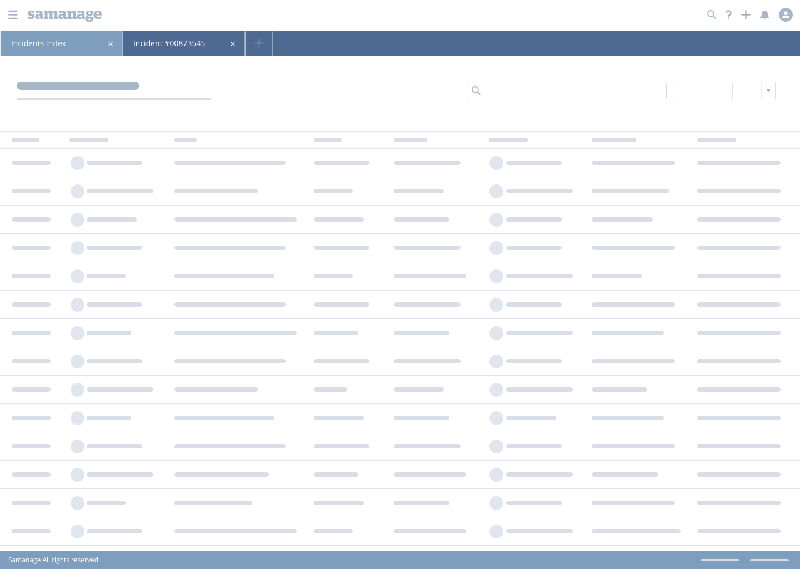
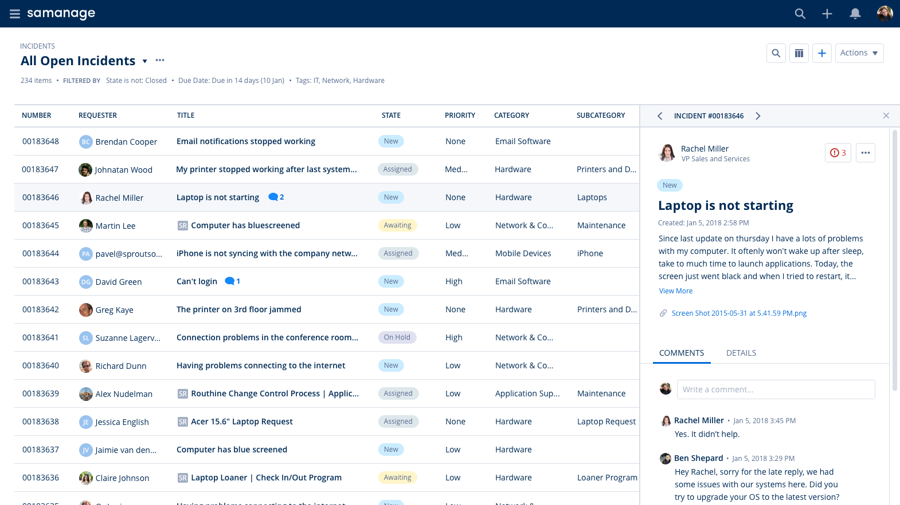

Wireframes
The key concepts to support main usecases
Working In Parallel
The inner app tabs would allow working in parallel on several incidents, several indexes
View Flexibility
The flexibility is achieved by independent side panels that allow different modes of work to suit the needs of each persona
Design
Few screens of the final design to demonstrate the main usecases
View SLA Breach Details
Click to open the dropdown with the details of Service Level Agreement (SLA) breaches
Open Incident Preview
The preview focuses on infortmation that can't be displayed in the table, such as full title, description, comments etc.
Edit Filters
The filter editing is done in the right panel in order to allow seeinng as much of the table as possible
Edit Filters with Preview Open
This allows flexibility in using the index page for managers who change filters frequently to focus on different items

New Incident
Open a new incident while remaining in the context of the index